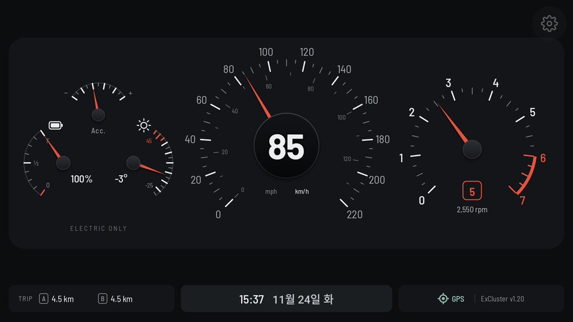
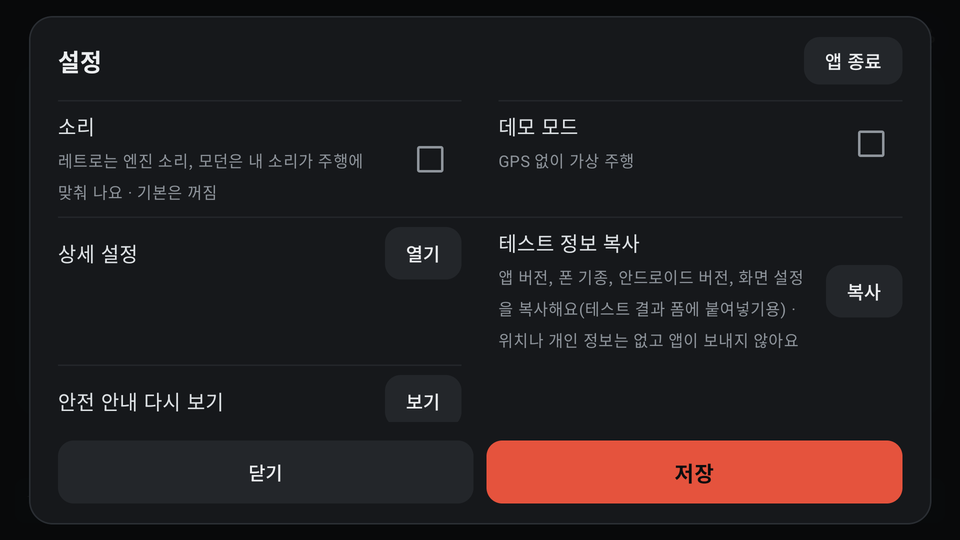
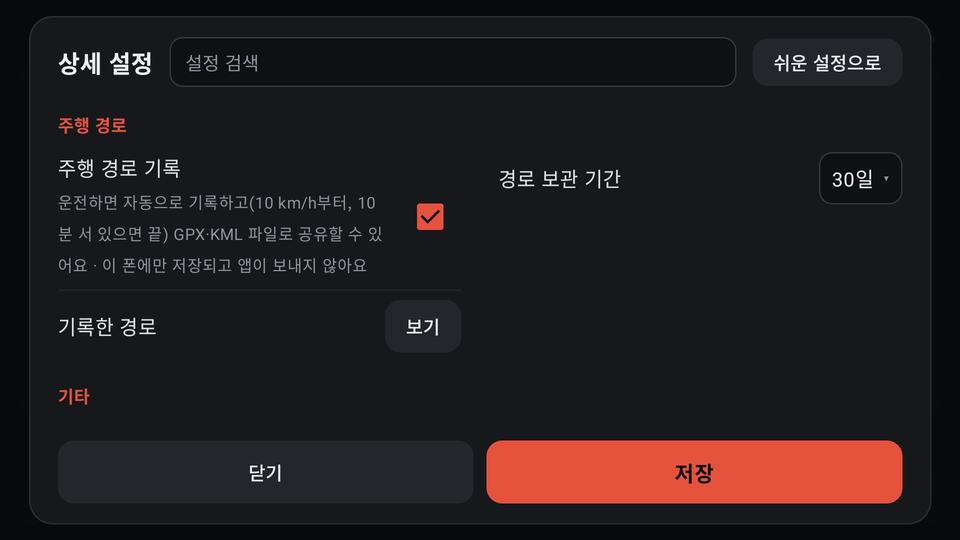
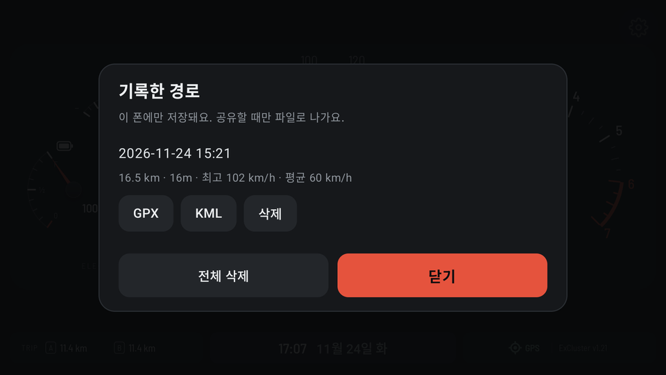
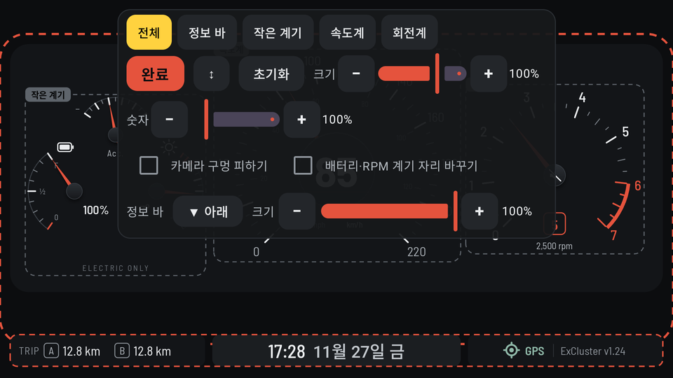
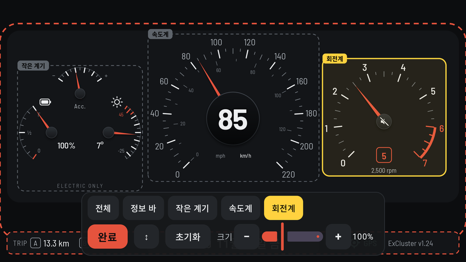
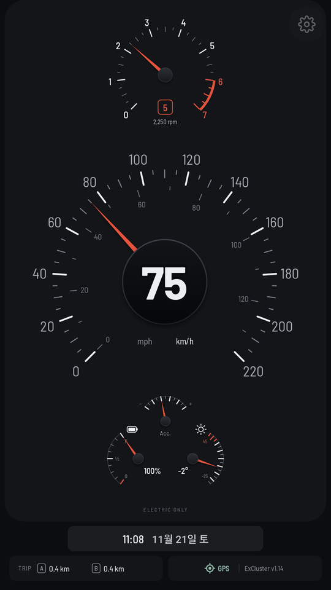

ExCluster 사용 설명서
스마트폰을 클래식 자동차 계기판처럼 쓰는 앱입니다. 이 설명서는 버전 1.23 기준입니다. 설정 화면의 글자와 같은 이름으로 적었으니 화면을 보면서 찾아 보세요.
안전 먼저. 폰은 시야나 에어백을 가리지 않는 곳에, 급제동이나 요철에도 떨어지지 않게 단단히 고정하세요. 운전 중에는 조작하지 말고, 설정은 정차 중에 바꾸세요.
1. 시작하기
- 폰을 거치대에 단단히 고정합니다.
- 앱을 열고 시작을 누릅니다. 위치(GPS) 권한을 허용하세요. 앱이 화면에 있을 때만 위치를 씁니다.
- 처음에는 안전 안내가 나옵니다. 읽고 계속하면 전체 화면 계기판이 켜지고 화면이 꺼지지 않게 유지됩니다.
- 차에서 쓰기 전에 써 보고 싶으면 데모 모드를 누르세요. GPS 없이 가상으로 달리는 화면을 보여 줍니다.
2. 화면에서 하는 일

레트로(가로): 가운데가 속도계, 오른쪽이 가상 RPM, 왼쪽이 가속·배터리·온도 계기이고 아래 줄에 트립, 시계, GPS 상태가 있습니다. 모던(가로): 큰 디지털 숫자와 속도 바. 구역마다 따로 옮길 수 있습니다.
모던(가로): 큰 디지털 숫자와 속도 바. 구역마다 따로 옮길 수 있습니다.
- 설정 열기: 오른쪽 위 톱니 아이콘을 누르거나 계기판을 0.8초 길게 누릅니다.
- 앱 종료: 계기판에서 뒤로 가기를 2초 안에 두 번 누르거나(첫 번째에 안내 문구가 잠깐 나옵니다) 설정 맨 위의 앱 종료를 누릅니다. 기록 중인 경로는 먼저 저장됩니다.
- 트립 A·B 거리 0으로: 트립 숫자를 1.5초 길게 누릅니다.
- GPS 상태: 초록색 "GPS"는 정상, "EST"는 터널 등에서 GPS가 끊겨 센서로 속도를 추정 중이라는 뜻입니다.
- 가상 RPM과 변속 표시는 속도에 맞춰 움직이는 장식이고, 실제 차의 값과는 무관합니다.
- 안드로이드 오토를 켠 경우 배터리 부분을 누르면 폰 배터리와 차 배터리가 바뀌고, 트립 부분을 누르면 트립과 주행거리가 바뀝니다.
3. 쉬운 설정
설정 화면 첫 페이지입니다.
 쉬운 설정의 첫 부분입니다. 오른쪽 위에 앱 종료가 있습니다.
쉬운 설정의 첫 부분입니다. 오른쪽 위에 앱 종료가 있습니다.

아래로 내리면 소리, 데모 모드, 상세 설정 열기, GPS 반응 속도 측정, 테스트 정보 복사, 안전 안내 다시 보기가 있습니다.| 항목 | 하는 일 |
|---|---|
| 테마 | 레트로(아날로그 바늘) 또는 모던(디지털 숫자), 각각 가로와 세로. 화면 방향도 테마를 따라 바뀝니다 |
| 언어 | 한국어 또는 English. 처음 실행할 때는 폰의 언어를 따릅니다 |
| 부제 규칙 | 한국의 5부제·10부제 운행 제한일에만 날짜 옆에 표시합니다 |
| 차량번호 끝자리 | 부제 계산에 쓰는 숫자입니다 |
| 주말 제외 | 날짜 기준 5부제와 10부제에서 주말을 뺍니다 |
| HUD 모드 (앞유리 반사) | 폰을 대시보드에 눕혀 앞유리에 비춰 보도록 화면을 위아래로 뒤집습니다 |
| 소리 | 켜면 레트로는 엔진 소리, 모던은 내 소리가 주행에 맞춰 납니다. 기본은 꺼짐 |
| 데모 모드 | GPS 없이 가상으로 달리는 화면입니다. 차 없이 앱을 써 볼 때 켭니다. 켜져 있는 동안 화면에 흐린 "DEMO" 글자가 보입니다(아래 4번 기타 참고) |
| 상세 설정 열기 | 아래 4번의 세부 설정으로 갑니다 |
| GPS 반응 속도 측정 | 내 폰이 GPS 속도를 초당 몇 번 받는지 알아봅니다(약 15~30초). 하늘이 트인 곳에 차를 세운 뒤 눌러 주세요. 달리는 중에는 시작되지 않습니다. 대부분의 폰은 초당 1번이고, 5번 이상이면 빠른 GPS 사용을 켤 수 있습니다(배터리와 발열이 조금 늘어납니다). 정지 상태에서 재므로 달리는 중과는 조금 다를 수 있습니다 |
| 안전 안내 다시 보기 | 처음에 본 안전 안내를 다시 읽습니다 |
| 테스트 정보 복사 | 앱 버전, 폰 기종, 안드로이드 버전, 화면 설정을 복사합니다(문의나 테스트 결과에 붙여넣기용, 위치·개인 정보 없음) |
4. 상세 설정
쉬운 설정의 "상세 설정 열기"로 들어갑니다. 위쪽 검색 칸에서 항목 이름이나 설명으로 찾을 수 있습니다.
화면
| 항목 | 하는 일 |
|---|---|
| 화면 위치·크기 | 조정하기로 갑니다(아래 6번) |
| 화면 방향 | 시스템 회전 설정과 관계없이 가로로 고정합니다. HUD로 눕혀 쓸 때는 한쪽 고정을 권장합니다 |
| 바늘 효과 | 속도계 잔상, RPM 반동, 노면 진동, 100 km/h 이상 숫자 떨림을 켜고 끕니다 |
| 배경 사진 | 모던 테마의 배경 사진. 사진은 이 폰에만 저장됩니다 |
| 사진 어둡게 / 사진 흐림 | 밝은 사진일수록 어둡게, 필요하면 흐리게 |
| 밤에 자동으로 어둡게 | 해가 진 뒤 사진 밝기를 절반으로 |
| 글씨 배경 | 사진 위에서도 글씨가 잘 보이게 |
| 위젯 표시 | 모던 화면에서 보일 구역을 고릅니다(속도는 항상 표시) |
주행
| 항목 | 하는 일 |
|---|---|
| 계기판 맞춤 보정 | 차 계기판은 실제보다 조금 높게 표시돼서, 앱 표시를 거기에 맞춥니다. 고르는 값은 100 km/h일 때의 차이입니다. +2로 두면 실제 100 km/h에서 앱이 102를 보여 줍니다. 다른 속도에서는 같은 비율(+2는 약 2%)로 맞춰서, 실제 50 km/h에서는 약 51, 160 km/h에서는 약 163을 보여 주고 멈춰 있으면 0입니다. 100 km/h 근처에서 앱과 차 계기판을 비교해서 값을 고르세요. 표시만 바뀌고 트립과 기록은 실제 속도입니다 |
| 변속기 | 가상 RPM의 기어비와 변속 시점을 고릅니다 |
| 거치 방향 학습 | 출발·제동 때 GPS 속도 변화로 전방을 찾아서 폰을 어떤 각도로 놓아도 가속을 읽습니다. 항상 켜져 있고 "학습 중" 또는 "학습 완료"로 상태만 보여 줍니다. 폰을 다른 각도로 옮기면 저절로 다시 배웁니다. 배우기 전에는 세워 둔 폰(HUD 모드면 눕힌 폰) 기준으로 읽습니다 |
| GPS 끊기면 속도 숫자 표시 | 터널에서 숫자가 센서 추정값임을 알려 줍니다. 글리치(기본): 크게 흔들리고 색이 번지며, 10초 넘게 끊기면 조금 더 강해집니다(숫자는 그대로 보입니다). 깜박임: 숫자와 "- -"가 1초에 한 번 번갈아 나옵니다. 끌 수도 있습니다 |
HUD
| 항목 | 하는 일 |
|---|---|
| 위쪽 폭 / 높이 | 앞유리 경사에 맞게 화면 모양을 조금 보정합니다(HUD 모드를 켠 때만) |
| 화면 밝기 | 자동 또는 고정 |
| 밝기 보정 | 자동 밝기를 전체적으로 어둡게·밝게 옮깁니다. HUD는 앞유리 반사 때문에 더 밝게 시작합니다 |
| 고정 밝기 | 고정으로 쓸 때의 밝기 |
HUD가 낮에 흐리거나 두 겹으로 보일 때: HUD 모드는 폰 화면이 앞유리에 비친 모습을 보는 방식이라, 보이는 밝기는 폰 화면의 최대 밝기와 앞유리에 따라 정해집니다. 밤에는 선명하지만 맑은 낮이나 직사광선 아래에서는 기종에 따라 흐리게 보일 수 있고, 앞유리 안쪽과 바깥쪽 면에 한 번씩 비쳐 글씨가 두 겹으로 보이기도 합니다. 이것은 앱이 아니라 화면 하드웨어와 유리의 한계라서 설정만으로는 완전히 없앨 수 없습니다. 이렇게 해 보세요.
- 화면 밝기를 고정 100%로: 상세 설정의 화면 밝기를 고정으로, 고정 밝기를 최대로 둡니다.
- 모던 테마: 숫자가 굵어서 반사된 화면에서 더 잘 읽힐 수 있습니다.
- HUD 반사 필름: 앞유리에 붙이는 HUD용 필름은 상을 밝게 하고 두 겹 상을 줄여 줍니다.
- 대시보드 차양: 폰 위를 가려 주면 화면에 직접 드는 햇빛이 줄어듭니다.
- 폰이 뜨거워지지 않게: 폰은 뜨거워지면 스스로 화면을 어둡게 합니다. 직사광선을 피하고 과열 보호를 켜 두세요.
- 아주 밝은 낮에는 HUD를 끄고 폰을 세워 거치대에 두는 일반 모드로 쓰는 것이 가장 잘 보입니다.
소리
| 항목 | 하는 일 |
|---|---|
| 레트로 테마 소리 | 엔진 소리 또는 내 소리. 엔진 소리는 처음 켤 때 잠시 준비하고 저장 공간을 약 75 MB 씁니다 |
| 내 소리 고르기 | 내가 가진 음원의 짧은 구간을 속도와 가속에 따라 변하는 소리로 씁니다. 음원의 저작권은 사용자에게 있습니다. 앱 화면을 녹화해 공개할 때 타인의 음원이 들어가면 저작권 문제가 생길 수 있으니 직접 만든 소리나 사용이 허락된 소리를 쓰세요. |
| 소리 크기 | 최대 150%. 100%를 넘기면 내비 안내가 훨씬 클 때 도움이 됩니다 |
| GPS 끊기면 소리 끄기 | 신호가 없을 때는 조용히 |
| 다른 소리를 줄이지 않기 | 켜면 음악을 그대로 두고 섞어 내보냅니다. 끄면 이 소리가 날 때만 음악이 작아집니다 |
| 음성 안내 때 음악 줄이기 | 과열 경고를 말하는 동안만 음악이 잠깐 작아집니다 |
| 목소리 확인 | 폰의 텍스트 음성 변환 목소리로 한 문장을 말해 봅니다(목소리는 폰 설정에서 바꿉니다) |
안드로이드 오토와 소리: 폰을 안드로이드 오토에 연결하면 폰의 미디어 소리가 모두 차 오디오로 나가고, 내비 안내가 우선이라 앱 소리가 작게 들리거나 묻힐 수 있습니다. 그래서
- 레트로의 엔진 소리와 모던의 내 소리를 제대로 들으려면 안드로이드 오토 연결을 해제하는 것을 권장합니다(삼성 폰은 오토를 끈 상태에서 앱 소리 분리 재생을 쓰면 앱 소리가 잘 들립니다. 메뉴 이름은 폰마다 다를 수 있습니다).
- 안드로이드 오토에 연결해 쓸 때는 소리를 끄는 것을 권장합니다. 소리가 원하는 대로 안 들릴 수 있습니다.
- 오토를 해제하면 차 화면 표시와 차 데이터(배터리, 주행 가능 거리)는 쓸 수 없습니다. 어느 쪽이 더 중요한지 골라서 쓰세요. 이 내용은 앱의 안드로이드 오토 설정(차 데이터 받기)과 별개로, 폰이 오토에 연결돼 있는지에 따른 것입니다.
차량 데이터
| 항목 | 하는 일 |
|---|---|
| 안드로이드 오토 | 켜면 차의 주행거리, 배터리, 주행 가능 거리를 계기판에 보여 주고 GPS가 끊길 때 차 속도를 보조로 씁니다. 끄면 차 데이터를 받지 않습니다 |
| 차 데이터 상태 | 차에서 받는 값의 상태 |
전원·발열
| 항목 | 하는 일 |
|---|---|
| 밤·터널에 계기판 어둡게 | 해가 진 뒤나 터널에서 글씨 밝기를 낮춰 눈부심을 줄입니다 |
| 과열 보호 | 폰이 뜨거워지면 경고하고 단계에 따라 화면을 단순하게 하며 소리·기록을 멈춥니다. 여름 낮 대시보드에서 쓸 때 켜 두세요 |
| 백그라운드 실행 | 앱이 화면에서 벗어나면 GPS와 센서를 멈추고 돌아오면 다시 시작합니다 |
주행 경로
| 항목 | 하는 일 |
|---|---|
| 주행 경로 기록 | 운전한 길을 폰에 기록하고 GPX·KML 파일로 공유합니다(아래 5번). 기본 꺼짐 |
| 경로 보관 기간 / 기록한 경로 | 기록을 지우기 전까지 둘 기간(기본 30일), 기록 목록 보기 |
기타
| 항목 | 하는 일 |
|---|---|
| 날씨 | 네 가지 예보 모델의 강수량으로 비·눈을 판단합니다. 예보라서 실제와 다를 수 있습니다 |
| 데모 모드 | 쉬운 설정에 있는 것과 같은 스위치입니다. GPS 없이 가상 주행을 보여 줍니다. 켜져 있는 동안 화면에 흐린 "DEMO" 글자가 보입니다. 크루즈 버튼은 지금 속도를 유지하고, +5 / −5는 5의 배수로 올리고 내립니다 |
숨은 메뉴(개발자·테스트용). 설정 맨 아래의 "ExCluster v…" 글자를 7번 누르면 맨 아래에 "디버그" 섹션(디버그 모드, 디버그 로그 등)이 열립니다. 속도와 센서 값을 폰에 기록해서 문제를 분석할 때 씁니다. 가속 센서 방향을 손으로 고르는 항목과 거치 방향을 처음부터 다시 배우게 하는 "초기화" 버튼도 여기에 있습니다. 디버그 로그도 아래 경로처럼 한꺼번에 내보낼 수 있습니다. 평소에는 필요 없고, 위의 "주행 경로 기록"과는 별개입니다.
5. 주행 경로 기록과 지도 보기
상세 설정 → 주행 경로의 주행 경로 기록을 켜면(기본 꺼짐) 운전한 길을 폰에 기록합니다.

상세 설정 → 주행 경로. 주행 경로 기록, 경로 보관 기간, 기록한 경로 보기.- 시작과 끝: 따로 누를 것이 없습니다. 앱이 켜져 있을 때 10 km/h를 넘으면 기록을 시작하고, 10분 넘게 서 있거나 앱을 닫으면 그 주행을 끝냅니다. 신호 대기처럼 짧게 서는 것은 같은 주행입니다. 300 m보다 짧은 주행과 데모 모드는 기록하지 않습니다.
- 보기: 상세 설정 → 주행 경로의 기록한 경로에서 보기를 누르면 주행마다 날짜, 거리, 걸린 시간, 최고·평균 속도가 나옵니다.
- 지도에서 보기: GPX 또는 KML을 누르면 파일로 다른 앱에 보낼 수 있습니다. KML은 Google 어스나 Google 내 지도에서 열 수 있고, 선 색이 속도를 나타냅니다(60 km/h까지 초록, 100까지 노랑, 그 위는 빨강). GPX는 대부분의 지도·운동 기록 앱이 읽습니다. Google 지도 앱은 이 파일을 바로 열지 못할 수 있습니다.

기록한 경로. 위에 한꺼번에 내보내기 버튼이 있고, 주행마다 요약과 GPX·KML 공유, 삭제 버튼이 있습니다. 이미 내보낸 주행에는 "✓ 보냄"이 붙습니다.-
한꺼번에 내보내기: 목록 위의 전체 내보내기 (zip)는 기록한 경로를 모두 zip 파일 하나로 묶어 공유합니다(주행마다 GPX와 KML, 파일 이름은
2026-11-25_0830.gpx처럼 날짜와 시각). 새 항목만은 아직 내보내지 않은 주행만, 선택은 체크한 주행만 묶습니다. 내보낼 때 하나로 합치기를 고르면 KML 하나(주행마다 폴더와 색)와 GPX 하나(주행마다 트랙)로 묶여서 Google 어스나 Google 내 지도에서 한 번에 볼 수 있고, 내보낸 뒤 삭제를 고르면 내보낸 주행을 폰에서 지웁니다. 공유 창을 연 주행은 "✓ 보냄"으로 표시됩니다. 앱은 공유 창에서 취소했는지 알 수 없으니, 다시 보내려면 전체 내보내기를 쓰세요. 지금 기록 중인 주행은 끝난 뒤에 내보낼 수 있습니다. -
개인정보: 기록은 이 폰에만 저장되고 앱이 어디로도 보내지 않으며, 폰 백업에도 들어가지 않습니다. 공유하는 파일에는 출발지와 도착지를 포함한 전체 경로가 들어 있어서, 공유하기 전에 한 번 더 물어봅니다. 경로 보관 기간(기본 30일, 7일·90일·지우지 않음)이 지나면 자동으로 지워지고, 목록에서 하나씩 또는 모두 지울 수 있습니다.
6. 조정하기 (화면 위치·크기)
상세 설정의 화면 위치·크기에서 조정하기를 누르면 아래 막대가 나옵니다. 바꾼 설정이 저장되지 않은 상태라면 "저장하고 조정할까요?"라고 물어보고, 저장한 뒤 바로 조정을 엽니다.

조정하기 막대(전체를 고른 상태). 빨간 점선은 계기판 전체와 정보 바, 회색 점선은 구역입니다.- 끌어서 이동, 두 손가락으로 크기 조절: 스티어링 휠 사이로 보이는 영역에 맞춥니다.
- 크기 / 숫자: 슬라이더로 전체 크기와 속도 숫자 크기를 정합니다(모던 테마에서는 속도 구역 크기). 슬라이더는 어디를 눌러도 손가락 위치로 값이 따라오고, 양옆의 −, + 버튼은 1%씩 세밀하게 바꿉니다. 만지는 동안 숫자가 크게 보입니다. 막대 안에서 버튼이나 슬라이더를 빗나간 터치는 뒤의 계기판을 움직이지 않습니다.
- 정보 바 위·아래, 크기: 레트로 테마에서 아래쪽 트립·시계·GPS 줄의 위치와 크기를 고릅니다.
- 카메라 구멍 피하기: 화면은 기본으로 폰의 카메라 구멍까지 꽉 차게 나옵니다. 구멍에 가려지는 부분이 있으면 켜세요.
- 배터리·RPM 계기 자리 바꾸기(레트로): 작은 계기 묶음(배터리 등)과 RPM 계기의 자리를 바꿉니다. 세로 화면에서는 RPM이 위로 올라옵니다. 두 계기를 손으로 옮기거나 크기를 바꿔 둔 경우에도 그 위치가 좌우(세로는 위아래)로 뒤집혀 따라가므로, 대칭으로 맞춘 배치는 바꾼 뒤에도 대칭입니다.
- 구역마다 따로: 막대 위쪽의 구역 이름을 누르거나 계기판에서 그 부분을 탭해 고르면(노란 테두리), 그 구역만 끌어서 옮기고 두 손가락이나 크기 슬라이더로 크기를 바꿉니다. 빈 곳을 탭하면 다시 전체입니다.

회전계를 고른 상태. 끌거나 두 손가락으로 회전계만 옮기고 크기를 바꿉니다. 막대는 ↕로 아래로 옮겼습니다. - 레트로: 정보 바, 작은 계기, 속도계, 회전계. 정보 바는 크기를 바꾸고, 화면 위쪽 절반으로 끌면 위로, 아래쪽 절반으로 끌면 아래로 갑니다. 숫자 슬라이더는 전체나 속도계를 골랐을 때 나옵니다. - 모던: 전체, 속도, 시간, 배터리·가속, 날씨·GPS, 트립. - 구역을 고른 채 초기화를 누르면 그 구역만, 전체에서 누르면 모두 원래대로 돌아갑니다. 가로와 세로는 따로 저장됩니다. - ↕: 조정 막대를 위나 아래로 옮깁니다. 초기화로 위치와 크기를 원래대로 돌립니다. 완료로 저장합니다.
레트로(세로)에서 계기 자리를 바꾸면 RPM이 맨 위로 올라옵니다.7. 문제 해결
| 증상 | 해 볼 것 |
|---|---|
| 속도가 차 계기판과 다르다 | 앱 속도는 GPS 기준입니다. 상세 설정의 계기판 맞춤 보정으로 맞춥니다 |
| 화면이 카메라 구멍에 가린다 | 조정하기에서 카메라 구멍 피하기를 켭니다 |
| 속도가 0이거나 GPS 표시가 안 잡힌다 | 위치 권한과 폰의 위치 기능을 확인하세요. 건물 안이나 터널에서는 늦게 잡힙니다 |
| 안드로이드 오토에서 엔진 소리가 작거나 안 들린다 | 오토 연결 중에는 소리가 원하는 대로 안 들릴 수 있습니다. 오토 연결을 해제하거나 소리를 끄는 것을 권장합니다(위 "소리"의 안드로이드 오토 안내). 비교하려면 다른 소리를 줄이지 않기를 켜고 꺼 보세요 |
| 내비 안내가 나올 때 엔진 소리가 묻힌다 | 상세 설정의 소리 크기를 올리세요(최대 150%) |
| HUD가 낮에 흐리거나 글씨가 두 겹으로 보인다 | 폰 화면 밝기와 앞유리 반사의 한계입니다. 화면 밝기를 고정 100%로, 모던 테마, HUD 반사 필름, 차양을 써 보세요(위 "HUD" 안내). 아주 밝은 낮에는 HUD를 끄고 세워 쓰는 것이 가장 잘 보입니다 |
| 폰이 너무 뜨거워진다 | 과열 보호를 켜 두세요. 직사광선을 피하고 충전기는 필요할 때만 연결하세요 |
| 앱을 바꾼 뒤 설정이 달라 보인다 | 설정은 폰에 저장되어 있고 업데이트해도 유지됩니다 |
문의: wavullet@gmail.com